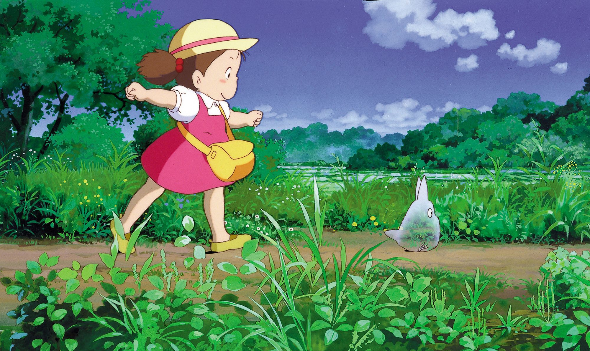

My Neighbor Totoro
Story

When two girls move to the country to be near their ailing mother, they have adventures with the wondrous forest spirits who live nearby. (imdb)
Miyazaki's films are above all visually enchanting, using a watercolor look for the backgrounds and working within the distinctive Japanese anime tradition of characters with big round eyes and mouths that can be as small as a dot or as big as a cavern. They also have an unforced realism in the way they notice details; early in ''Totoro,'' for example, the children look at a little waterfall near their home, and there on the bottom, unremarked, is a bottle someone threw into the stream. -Roger Ebert
Information
| role | credits |
|---|---|
| Director | Hayao Miyazaki |
| Writer | Hayao Miyazaki |
| Satsuki | Noriko Hidaka |
| Mei | Chika Sakamoto |